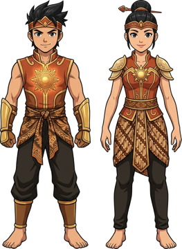
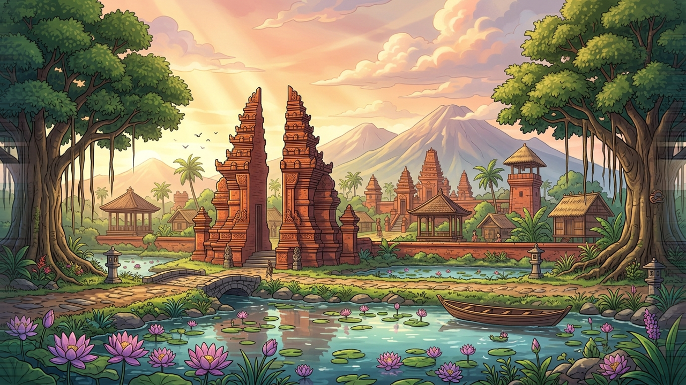
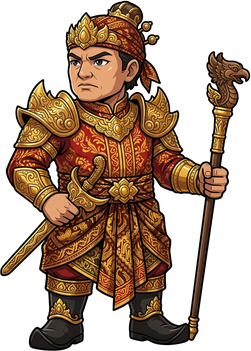

Kala Nusantara dirancang khusus untuk layar mendatar.

Kala Nusantara
Bhayangkara Majapahit
Memuat Pustaka & Aset Trowulan...0%
Tahukah Kamu?
Raden Wijaya mendirikan Kerajaan Majapahit pada tahun 1293 M di kawasan hutan Tarik, Trowulan.
Museum Trowulan · Masa Kini
Cahaya Medali Surya Majapahit
Saat jemarimu menyentuh ukiran Medali Surya Majapahit di dalam etalase kaca, cahaya keemasan berpendar hebat dan menarik kesadaranmu menembus lorong waktu...
Ketuk salah satu stage untuk memilih perjalananmu.
Mode:
Balai Belajar · Stage 1 · Kartu 1/5

Judul Kartu
HP 100/100Keris

Mahapatih Gajah MadaKetuk untuk lanjut ▸
Cek Cepat Pra-Main
Ujian Gerbang Waktu
Stage Tuntas!
Cahaya Wilwatikta Pulih Kembali!
Kabut Bayangan Lupa telah sirna! Kala Penjaga Candi Agung kembali bersinar keemasan menjaga pelataran Trowulan, dan seluruh catatan sejarah Majapahit dari tahun 1293 M hingga ikrar Sumpah Palapa (1334 M) berhasil kamu selamatkan!
Permainan Dijeda
Setelan & Data Permainan
Suara & Musik Gamelan
Efek Visual Ambient (Daun / Burung / Awan)
Hapus / Reset Data Permainan
Mulai ulang semua progres dari 0 & kembali ke layar pembuka.
 Zirah Bhayangkara Surya
Zirah Bhayangkara Surya